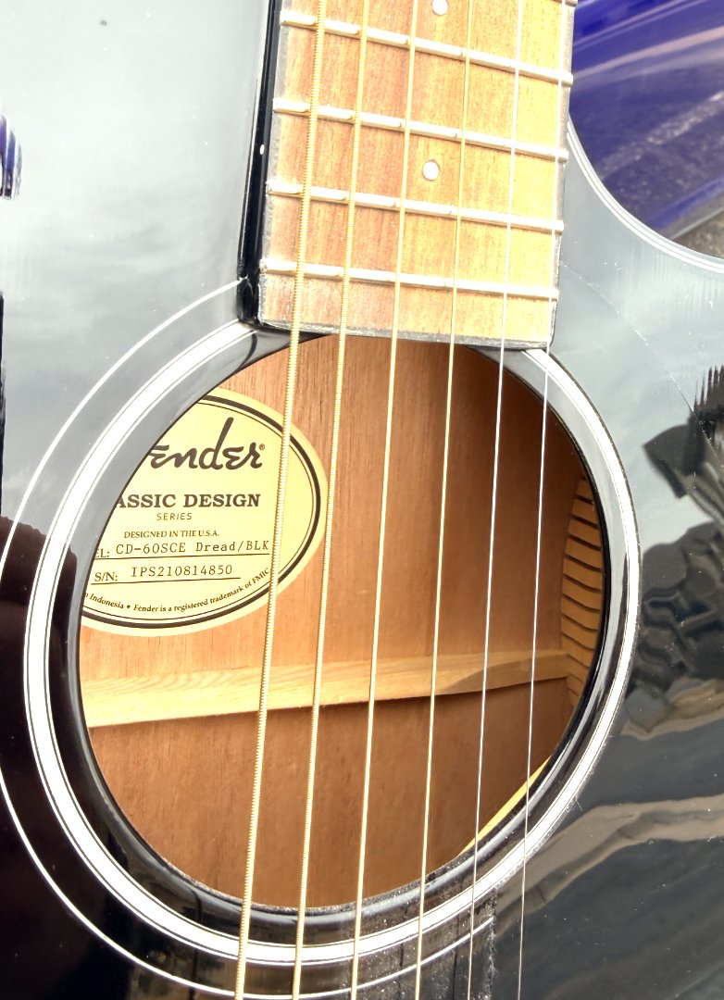
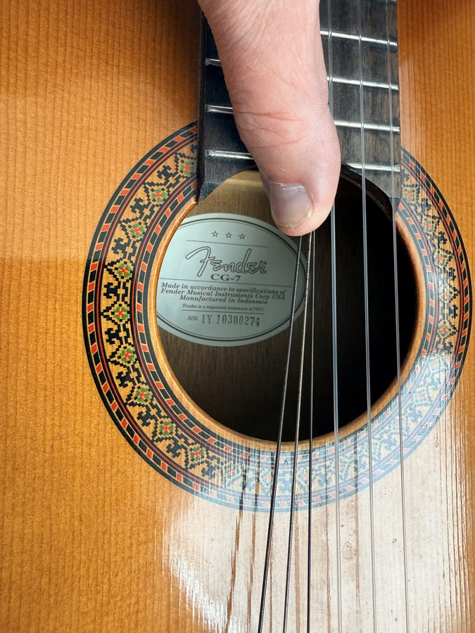
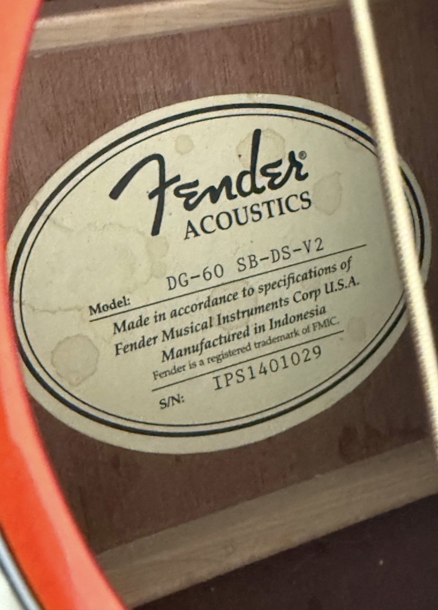
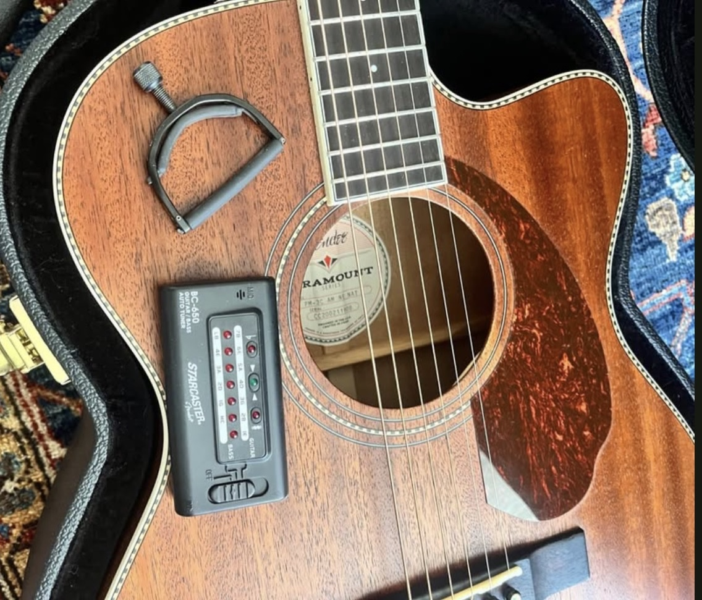
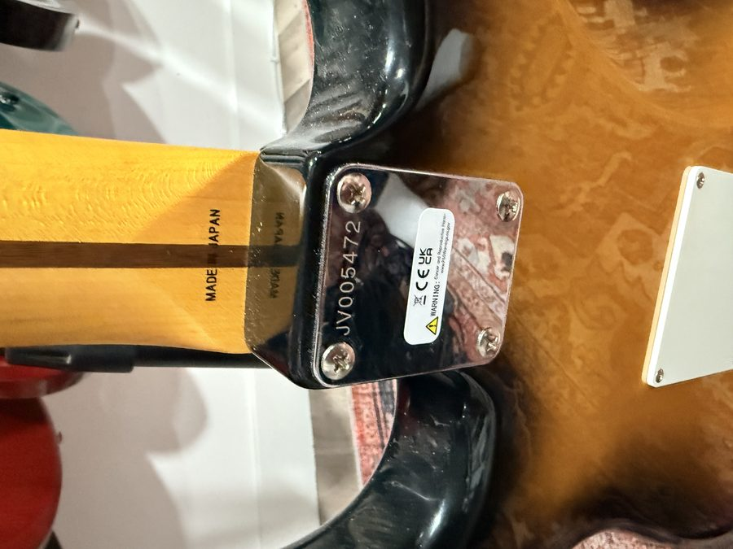
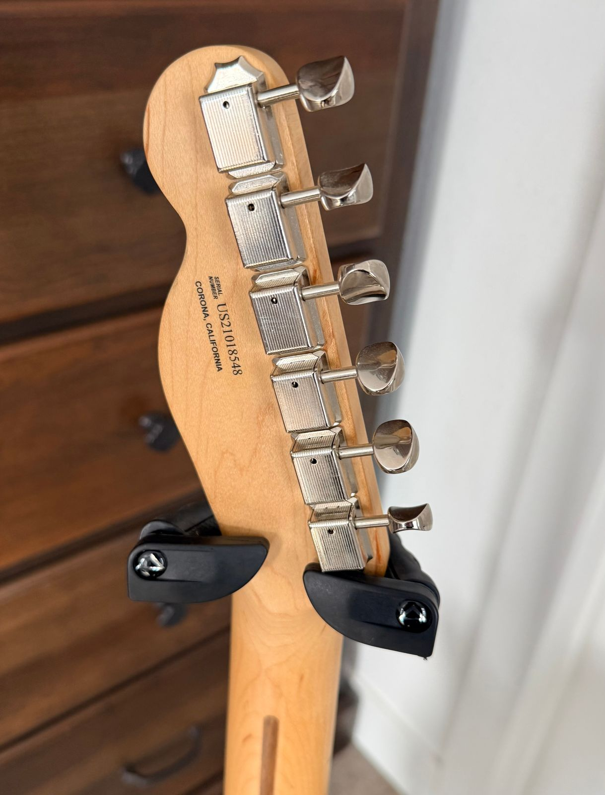
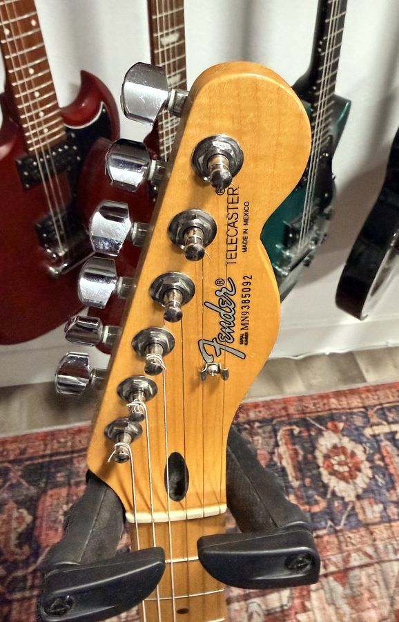
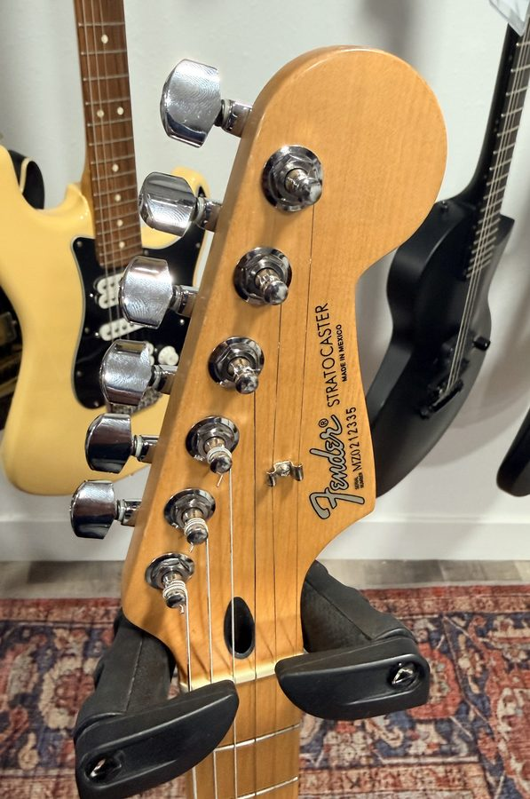
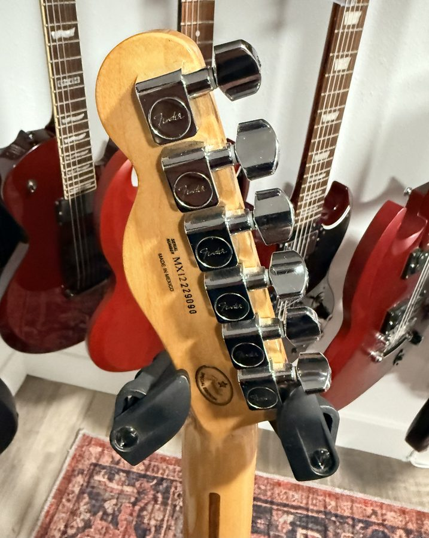

75 Years Across Four Continents
The Fender Musical Instruments Corporation is the defining name in electric guitar and bass history. Founded by Clarence Leonidas "Leo" Fender in Fullerton, California in 1946, the company introduced the world's first mass-produced solid-body electric guitar — the Broadcaster (later renamed the Telecaster) in 1950 — followed by the Stratocaster in 1954, an instrument that would reshape rock, blues, and country music for generations.
Unlike Gibson's carved-top tradition, Leo Fender approached guitar building like a parts manufacturer: bolt-on necks, interchangeable components, and production methods borrowed from the automobile industry. The result was a guitar anyone could repair, modify, or replace in pieces — a philosophy that made Fender instruments the workhorses of professional music.
CBS acquired Fender in 1965, ushering in a controversial era of cost-cutting that lasted until 1985, when a management group led by Bill Schultz bought the company back. Today Fender Musical Instruments Corporation is headquartered in Scottsdale, Arizona, with production facilities in Corona, California (USA models) and Ensenada, Mexico (Player and Standard series), plus factories in Japan and partnerships in China, Korea, and Indonesia for its budget and mid-range lines. Through every factory and every era, the serial number is the key to understanding where — and when — a Fender was born.
A History of Fender Serial Number Formats
Fender's serial number history is famously complicated — more so than Gibson's — because production has spanned multiple countries, multiple factories, and multiple brand tiers simultaneously. The same serial prefix can mean different things depending on the decade, and overlapping ranges are common. Here is how the formats evolved.
The Broadcaster Era — Neck Pocket Stamps
Fender's earliest instruments carried no formal serial number system. Numbers were hand-stamped on the neck plate or inside the neck pocket with no consistent format. Some early Telecasters and Esquires show numbers in the low hundreds. Dating these guitars relies more on pot codes, pickup dates, and body stamps than serial numbers alone.
Five-Digit Neck Plates — The Golden Era
Fender standardized on chrome neck plates stamped with 5-digit serials in the format 00001 through 99999. These cover the original Stratocaster, the sunburst Telecaster, and the early Jazzmaster. By the late 1950s numbers exceeded five digits and a "0" prefix was added. Ranges overlap across years, and neck dates (written in pencil on the heel of the neck) are the most reliable dating tool for this period.
The "L"-Series
A brief but distinctive period saw Fender prefix serials with the letter L (e.g. L00001). The exact reason is debated — the most common explanation is that Fender accidentally ordered neck plates stamped with a backwards "F," but this has never been confirmed. L-series guitars cover some of the most desirable pre-CBS instruments.
The CBS Years — F-Series Neck Plates
After CBS acquired Fender in January 1965, serial numbers moved to a new large F-style neck plate. Numbers ran from roughly 100000 into the 700000s. Dating CBS-era Fenders is notoriously imprecise — production dates on neck heels and pot codes remain the most reliable references, as Fender used up old parts inventories for years after a model change.
The Decade Prefix System Begins
Fender introduced letter-prefix serials to indicate the production decade: S for the 1970s (Seventies), E for the 1980s (Eighties), and so on. A serial of S701234 indicates 1977; E812345 indicates 1988. Overlapping production means the first digit after the letter often (but not always) corresponds to the year within the decade.
Factory Prefix Codes — The Modern Era
As Fender expanded production globally, factory codes were added to the serial prefix to identify the country of origin. The key prefixes you'll encounter today are: US or V = USA (Corona, CA), MN or MX or MZ = Mexico (Ensenada), JV or JD or CIJ = Japan, KV = Korea, and CN = China. For most modern Fenders, the digits following the prefix encode the year: MX21 = 2021 Mexico, US19 = 2019 USA.
Acoustic & Budget Lines — Soundhole Labels
Fender acoustics and lower-cost electrics manufactured in Indonesia, China, and Korea use interior soundhole labels rather than headstock stamps. These oval paper labels carry the model name, serial number, and a "Made in [Country]" designation. The prefix IPS or IYS indicates Indonesia; the digits that follow encode year and production sequence. These instruments are designed in the USA but manufactured abroad under FMIC specifications.
Real Examples, Decoded
The serial number photos here span nearly four decades of Fender production across four countries — each one tells a different story.









CORONA, CALIFORNIA
ENSENADA, MEXICO
MADE IN JAPAN
MADE IN INDONESIA
Quick Reference: Serial Prefixes at a Glance
| Prefix | Example | Factory / Country | Notes |
|---|---|---|---|
| (none / 5-digit) | 12345 | USA — Fullerton, CA | Pre-1963 neck plate stamps |
| L | L00001 | USA — Fullerton, CA | 1963–65 only; pre-CBS |
| S, E, N, Z | S712345 | USA — Fullerton / Corona | Decade prefixes: S=70s, E=80s, N=90s, Z=00s |
| US / V | US21018548 | USA — Corona, CA | Current American-made standard |
| MN | MN9385092 | Mexico — Ensenada | Late 1990s–early 2000s Standard Series |
| MZ | MZ0212335 | Mexico — Ensenada | ~2000–2006 Mexican production |
| MX | MX21262807 | Mexico — Ensenada | Current Player Series Mexico |
| JV / JD / CIJ | JV005472 | Japan | JV = vintage reissues; CIJ = Crafted in Japan |
| IPS / IYS | IPS210814850 | Indonesia | Classic Design, acoustic series |
| CN / CG | CN200211M9 | China | Paramount and budget acoustic series |
| KV | KV123456 | Korea | Some Squier and budget Fender lines |
One important note: because Fender has always built guitars from parts inventories, a guitar's serial number tells you when the neck was stamped — not necessarily when the body was routed, when the electronics were installed, or when the guitar left the factory. A 1965-stamped Telecaster neck might sit in a bin for months before being assembled into a completed guitar in early 1966. For precise dating, always cross-reference the serial with pot codes and neck-heel dates.
Understanding Fender's factory codes is especially important today, as the company makes instruments across four continents at widely varying price points and quality tiers. A Mexican-made Player Stratocaster and an Indonesian-made Classic Design acoustic both carry the Fender name — but the serial tells you instantly which factory floor it came from and roughly what year it was built.